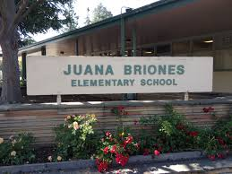

Here is an overview of my childhood...
I lived in Shanghai, China for the first 10 years of my life. I went to Montessori for Kindergarten, and Dulwich College International Shanghai (DCIS) from Year 1 through Year 3, then I transfered to Wellington College International (WCIS) to study further academics and music.
After that decade, I came to the United States: California, Silicon Valley. For the last year of Elementary school, I went to Juana Briones in Palo Alto, and my teacher there became my favourite one of all, called Mr. Antal. In 5th Grade, I also went to CSMA and San Fransisco Conservatory to study the Cello and the Piano
|  |  |
|
Now here are some videos of me playing the piano!
And here is who I studied Piano with:
|
Rustem Kudoyarov |
Erna Gulabyan |
Manfred Fock |

|
||
|
|
|
|
Note: The rest of this web under construction... Please Stand By...
© 2019 Paul Garofalo